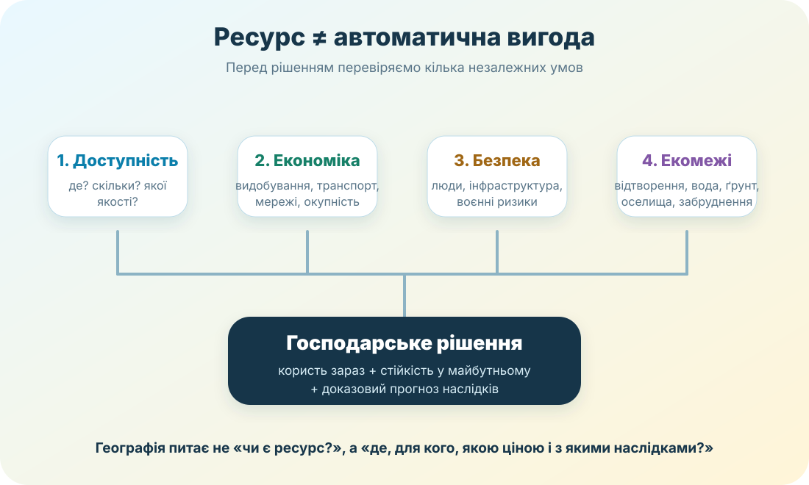

Підсумовуємо блок про природні ресурси України та рішення людей: територію й землю, кліматичні та мінеральні ресурси, енергетику, воду, ліси, ресурси моря й рекреацію. Тут важливо не пригадати окреме слово, а прочитати дані, побачити причинний зв’язок і обрати рішення, яке витримує перевірку доказами.
Введіть дані. Робота відкриється лише після заповнення всіх полів.
Оцінювання: по 4 бали за ГР1, ГР2 і ГР3. Відкрите обґрунтування автоматично не оцінюється — воно потрібне вчителю для перевірки якості аргументації.
3–7 хв
Спільна панель доказів

Ключ до всієї роботи: ресурс ≠ автоматична вигода. Потрібні дані про доступність, витрати, ризики, екологічні межі й користь для людей.
Працюйте як географ-аналітик. Дані нижче достатні для всіх розрахунків. Не треба шукати готові відповіді в інтернеті.
Вода
4 996,6 млн м³
забір води з природних джерел в Україні у 2025 р.; у басейні Дніпра — 3 391,8 млн м³.
Ліси
15,9%
лісистість України; у степовій зоні — близько 5,3%.
Енергія
0,45 кВт × 100
умовна шкільна СЕС зі 100 панелей; річний питомий виробіток для задачі — 1 200 кВт·год/кВт.
Рекреація
6 критеріїв
ресурсність, доступність, безпека, екологічна місткість, користь громаді, унікальність.
Джерела для числових прикладів: Держводагентство, Держлісагентство; енергетичний приклад — навчальна модель із заданими в умові величинами.
7–17 хв • ГР1
ГР1. Працюємо з інформацією й даними — 4 бали
1 бал1. Земельна ділянка має родючий ґрунт, але крутий схил і високий ризик ерозії. Який висновок найбільш обґрунтований?
1 бал2. Скільки електроенергії за рік дасть навчальна модель СЕС: 100 панелей по 0,45 кВт, якщо питомий виробіток становить 1 200 кВт·год на 1 кВт встановленої потужності?
1 бал3. Країна має родовище певної руди, але частину цієї сировини все одно імпортує. Який факт сам по собі НЕ суперечить географічній логіці?
1 бал4. Яка приблизна частка загального забору води припала на басейн Дніпра за наведеними даними?
17–27 хв • ГР2
ГР2. Пояснюємо взаємозв’язки — 4 бали
1 бал5. Підприємство використовує дуже масову й відносно дешеву сировину, під час переробки якої велика частина маси втрачається. Де логічніше розміщувати першу стадію переробки?
1 бал6. Лісистість степової зони значно нижча, ніж середня по Україні. Чому твердження «треба заліснити весь природний степ» помилкове?
1 бал7. Чому збільшення вилову морських біоресурсів не можна вважати безумовно правильним способом відновлення економіки?
1 бал8. Локація дуже мальовнича, але має мінне забруднення, слабкий доступ і надзвичайно вразливі оселища. Що це означає для рекреаційного проєкту зараз?
27–32 хв • ГР3
ГР3. Приймаємо рішення й оцінюємо ризики — 4 бали
1 бал9. Під час маловоддя води не вистачає одночасно на питні потреби, екологічний стік, зрошення та промисловість. Який алгоритм найкращий?
1 бал10. Виявлено перспективне родовище критичної сировини. Яке рішення є професійнішим до початку видобування?
1 бал11. Громада обирає місце для великої СЕС. Варіант А — продуктивна рілля далеко від мережі; Б — деградована ділянка біля підстанції з низькою природоохоронною цінністю. За інших рівних умов який варіант сильніший?
1 бал12. Яке твердження найкраще підсумовує весь блок про природні ресурси?
Відкрите обґрунтування (обов’язково). Оберіть одне завдання 9–11 і напишіть 3–5 речень за CER: Claim — Ваше рішення; Evidence — конкретний факт/умова; Reasoning — чому цей факт підтримує рішення та який наслідок Ви прогнозуєте.
32–34 хв
Самооцінювання
Позначте, де Вам потрібне додаткове тренування. Це не зменшує бал — навпаки, дає нормальний маршрут корекції замість загадкового «повтори все».